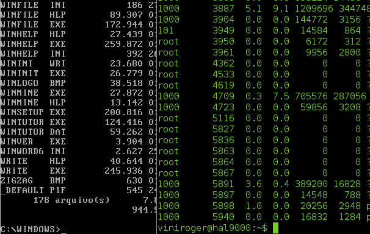

Interface de Linha de Comando (CLI)

O que é?
A Interface de Linha de Comando (CLI) permite que o usuário interaja com o computador digitando comandos em um terminal. Esse tipo de interface oferece grande controle sobre o sistema e é amplamente utilizado por administradores de sistemas, programadores e profissionais de tecnologia.
Principais características
- Interação baseada em comandos de texto.
- Baixo consumo de recursos do sistema.
- Execução rápida de tarefas.
- Permite automação por scripts.
Vantagens
- Alta eficiência para usuários experientes.
- Automação de processos repetitivos.
- Maior controle sobre o sistema operacional.
- Execução de tarefas complexas com poucos comandos.
Desvantagens
- Curva de aprendizagem elevada.
- Necessidade de memorizar comandos.
- Pouco intuitiva para iniciantes.
Exemplos
- Prompt de Comando (CMD)
- Windows PowerShell
- Bash (Linux)
- Terminal do macOS
Aplicações
A CLI é utilizada em administração de servidores, desenvolvimento de software, automação de tarefas, configuração de redes, gerenciamento de bancos de dados e ambientes de computação em nuvem.
Resumo
Mesmo com a popularização das interfaces gráficas, a CLI continua sendo essencial em ambientes profissionais por oferecer rapidez, precisão e flexibilidade na execução de tarefas técnicas.